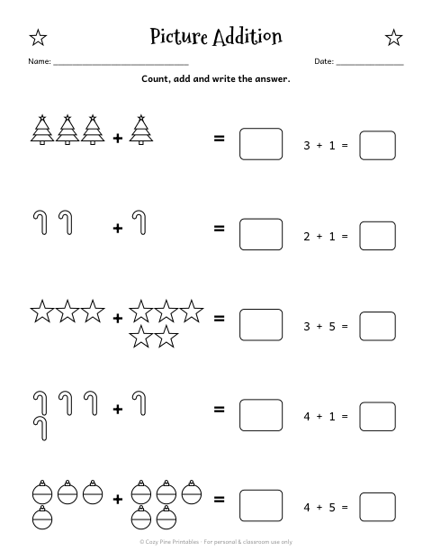
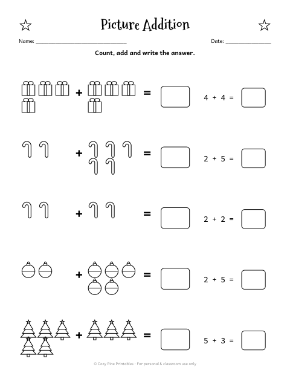
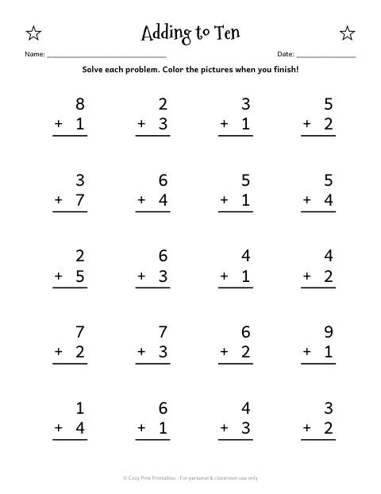
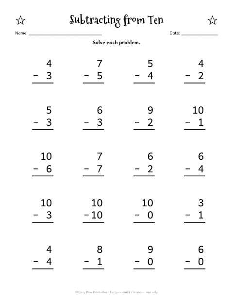
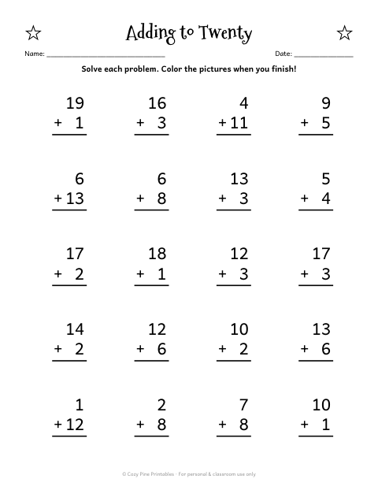
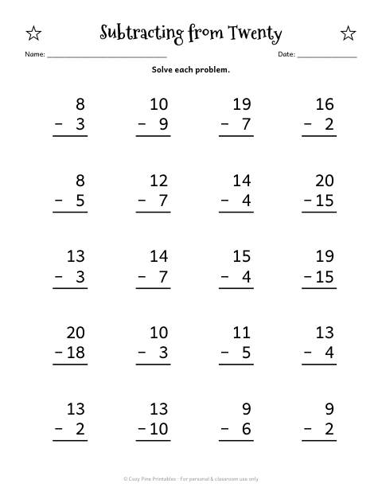

Christmas Addition & Subtraction
Within 10 and 20 · kindergarten & 1st grade
These Christmas worksheets practice adding and taking away — first with pictures, then with numbers within 10, then within 20.
Kindergartners can stay with the picture pages and sums to 10; first graders can move on to the within-20 pages. Every page has an answer key.
The free sample includes an Adding to Ten page with 20 problems:
⬇ Download 5 free math worksheets (PDF)Free PDF includes:
- Count & Write 1–10
- Adding to Ten
- Missing Numbers
- Compare Numbers (>, <, =)
- Number Tracing 1–5
Addition & subtraction pages in the full pack






Christmas Math Worksheets K–1

- 24 worksheets: ten frames, make ten, addition & subtraction to 20, hundred chart, skip counting, number tracing 1–10, story problems
- Answer keys for every page
- "Christmas Math Star" certificate
- 49 pages · instant PDF download
$5.99
Get the full 49-page pack →Christmas Bundle: Math + Coloring

- Both packs: 49-page Christmas Math Worksheets + 31 Christmas coloring pages
- 80+ printable pages · 2 PDF files · instant download
- $10.99 if bought separately — save 40%
$6.43
Get the bundle →Tips
- Let kids use small counters (candy, buttons) for the first pages.
- Mix one addition and one subtraction page a day so kids see how they connect.
- Time a page as a friendly "beat your score" game for first graders.